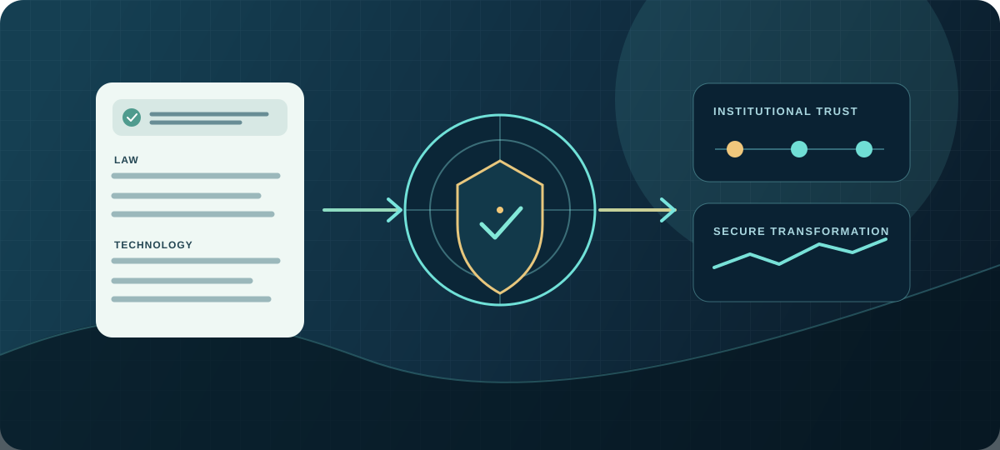

Secure and trusted digital transformation
To emerge as a leading techno-legal research and capacity-building centre advancing secure digital infrastructure and responsible data governance in India.
About Us

The CNLU–GIGA Cyber Security and Data Protection Compliance Research Unit (CS-DPCRU) is an institutional initiative described in this brief as bringing together legal scholarship, cybersecurity expertise, technology innovation and regulatory compliance.
As organisations increasingly rely on digital platforms, artificial intelligence, cloud infrastructure and data-driven decisions, the Unit aims to connect legal analysis, technical understanding, institutional preparedness and practical implementation.
Its techno-legal approach is intended to support measurable security, responsible data use and sustainable digital trust.
To emerge as a leading techno-legal research and capacity-building centre advancing secure digital infrastructure and responsible data governance in India.
Promote interdisciplinary research, develop practical governance and compliance approaches, and strengthen the capacity of public and private institutions.
Bring legal obligations, technology safeguards, organisational accountability and risk management into a coherent institutional approach.